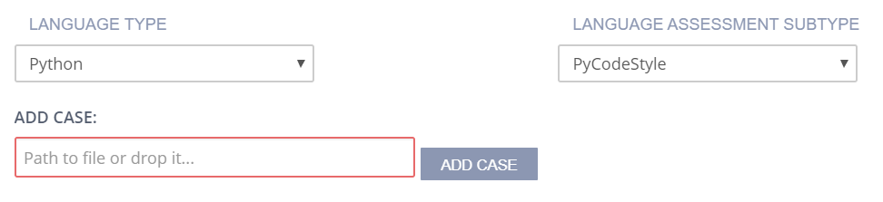
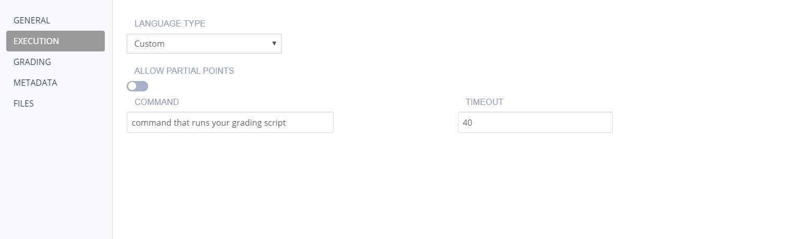

Advanced Code Test¶
The advanced code test assessment type allows you to easily implement unit tests, style checkers, or write custom code tests in any language that grades student-written code.
To ensure that your test scripts run securely and to prevent student access to your testing files or executables, place them in the .guides/secure folder. This folder is not available to students in their assignments and they cannot access it from the command line. Only teachers with editing privileges have access to the .guides/secure folder.
Note
If your assignment will contain multiple assessments, Code files and Test Cases for individual assessments should be placed in separate folders to avoid compiling all files.
Complete each section to set up your advanced code test.
On the General page, enter the following information:

Name - Enter a short name that describes the test. This name is displayed in the teacher dashboard so the name should reflect the challenge and thereby be clear when reviewing.
Toggle the Show Name setting to hide the name in the challenge text the student sees.
Instructions - Enter text that is shown to the student using optional Markdown formatting.
Click Execution in the navigation pane and complete the following information:
Language Type - Click the drop-down and choose the language. The following language-specific frameworks are explicitly supported:
Java: JUnit or checkstyle
Python: pycodestyle or UnitTest
JavaScript: JSHint and JSLint
Custom: for a custom auto-grading script in any language
Language Assessment Subtype - Click the drop-down and choose a subtype for the selected language type, if applicable.
Timeout - Where you can amend the timeout setting for the code to execute. Arrows will allow you to set max 300 (sec), if you require longer, you can manually enter the timeout period.
Click on the Parameters tab if you wish to edit/change Parameterized Assessments (deprecated) using a script. See Parameterized Assessments for more information. New parameterized assessments can no longer be set up.
Click Grading in the left navigation pane and complete the following fields:

Points - The score given to the student if the code test passes. You can enter any positive numeric value. If this assessment should not be graded, enter 0 points.
Allow Partial Points - Toggle to enable a percentage of total points to be given based on the percentage correctly answered. See Allow Partial Points for more information.
Define Number of Attempts - enable to allow and set the number of attempts students can make for this assessment. If disabled, the student can make unlimited attempts.
Show Rationale to Students - Toggle to display the rationale for the answer to the student. This guidance information will be shown to students after they have submitted their answer and any time they view the assignment after marking it as completed. You can set when to show this selecting from Never, After x attempts, If score is greater than or equal to a % of the total or Always
Rationale - Enter guidance for the assessment. This is always visible to the teacher when the project is opened in the course or when opening the student’s project.
Use maximum score - Toggle to enable assessment final score to be the highest score attained of all runs.
Click Metadata in the left navigation pane and complete the following fields:

Bloom’s Level - Click the drop-down and choose the level of Bloom’s Taxonomy: https://cft.vanderbilt.edu/guides-sub-pages/blooms-taxonomy/ for the current assessment.
Learning Objectives The objectives are the specific educational goal of the current assessment. Typically, objectives begin with Students Will Be Able To (SWBAT). For example, if an assessment asks the student to predict the output of a recursive code segment, then the Learning Objectives could be SWBAT follow the flow of recursive execution.
Tags - The Content and Programming Language tags are provided and required. To add another tag, click Add Tag and enter the name and values.
Click Files in the left navigation pane and check the check boxes for additional external files to be included with the assessment when adding it to an assessment library. The files are then included in the Additional content list.

Click Create to complete the process.
RuboCop¶
RuboCop (website link) is a Ruby Linter.
To check if RuboCop is already installed on your stack, simply run rubocop from the command line. If it is not installed, you can easily install it either via the command line (gem install rubocop) or using bundler (by adding gem ‘rubocop’, require: false to your Gemfile).
When using Rubocop in Codio, specify the Ruby files you’d like RuboCop to check under the ADD CASE: option.
The student will need to follow all style conventions to earn full credit on the assessment.
RSpec¶
RSpec (website link) is a Ruby testing suite.
To check if RSpec is already installed on your stack, simply run rspec from the command line. If it is not installed, you can easily install it either via the command line (gem install rspec) or using bundler by adding it to your Gemfile.
When using RSpec in Codio, specify the ruby files containing RSpec tests you’d like to run under the ADD CASE: option.
If you have more then one test, by default, the student will need to pass all tests to earn the specified number of points. You can toggle on ALLOW PARTIAL POINTS to have Codio evenly weight each test.
JUnit¶
JUnit (website link) is a Java testing framework. Currently Codio supports JUnit 4 and JUnit 5 so you can choose any one of them as per your requirement.
When using JUnit in Codio, specify the Java files containing JUnit tests you’d like to run under the ADD CASE: option.
If you have more then one test, by default, the student will need to pass all tests to earn the specified number of points. You can toggle on ALLOW PARTIAL POINTS to have Codio evenly weight each test.
There are 4 optional configurations for more complex file structures:
SOURCE PATH - specifies where the student code being tested is
TESTS SOURCE PATH - specifies where non-test-case test helper files are
LIBRARY PATH - specifies where .jar files needed to run the student code or test code at
WORKING DIRECTORY - specifies where in the file tree the actual test will run
All code files Source path will be compiled. Files that fail to compile successfully will cause the tests to fail, even if they are not used. Codio has a JUnit runner for building JUnit tests.
Custom Feedback with JUnit in Codio¶
When using JUnit in Codio, you can add your own custom feedback to the standard feedback Junit returns to students. The feedback message is passed to the assert method as the first parameter.
assertEquals(feedback, expected, actual)
checkstyle¶
checkstyle (website link) is a Java linter.
When using checkstyle in Codio, specify the configuration file under CONFIG PATH – you can use the Google configuration, Sun configuration, or create your own configuration.
Select the CHECKSTYLE VERSION, by default the appropriate version is selected according to your installed Java version but you can also select one of the available options:
Checkstyle v10.12(JRE 11 and above)
Checkstyle v8.24(JRE 8 and above)
Checkstyle v8.9(JRE 8)
Checkstyle v6.6(JRE 6 and 7)
Specify the Java files you’d like Checkstyle to check under the ADD CASE: option.
The student will need to follow all style conventions to earn full credit on the assessment.
pycodestyle¶
If you want to use pycodestyle, you must first install it. Use the following commands to install pycodestyle:
sudo apt update
sudo apt install python3-pip
sudo python3 -m pip install pycodestyle

To add individual Python source files whose style should be checked, either enter their relative path to ~/namespace or drag them from the File Tree into the Add Case text box and click Add Case. You may add as many cases as needed. When the assessment executes, pycodestyle inspects each added file and outputs all styling issues.
UnitTest¶
UnitTest (website link) is a python testing framework.
When using python UnitTest in Codio, specify the python files containing UnitTest tests you’d like to run under the ADD CASE: option.
Specify whether you are running python 2 (python) or python 3 (python3) under PYTHON EXECUTABLE.
If you have more then one test, by default, the student will need to pass all tests to earn the specified number of points. You can toggle on ALLOW PARTIAL POINTS to have Codio evenly weight each test.
There are 2 optional configurations for more complex file structures:
PYTHON WORKING DIRECTORY - specifies where in the file tree the actual test will run
STUDENT FOLDER - specifies where the student code being tested is
JSHint and JSLint¶
JSHint or JSLint must first be installed as a Node.js global package using the following command:
sudo npm install -g jshint jslint
To add individual JavaScript source files for style checking, either enter their relative path to ~/namespace or drag them from the File Tree into the Add Case text box and click Add Case. You may add as many cases as needed.
You can also choose JSLint or JSHint in the Language Assessment Subtype drop-down menu. When the assessment executes, each added file is inspected and outputs all styling issues that were found.
Custom¶
If you choose Custom, enter the following information:

Command - Enter the command that executes the student code.
Note
If you store the assessment scripts in the .guides/secure folder, they run securely and students cannot see the script or the files in the folder.
The files can be dragged and dropped from the File Tree into the field to automatically populate the necessary execution and run code.
Timeout - Enter the time period (in seconds) that the test runs before terminating.
Allow Partial Points - Toggle to enable partial points, the grade is then based on the percentage of test cases the code passes. See Allow Partial Points for more information.
See a Working Example¶
To see an example of a specific unit test or style checker, see the Starter Pack in the corresponding language:
Go to Starter Packs and search for Advanced Features in Python if not already loaded in your My Projects area. Click Use Pack and then Create to install it to your Codio account.
Information about C++ unit testing using GoogleTest is available in the C++ Unit Testing Using GoogleTest Starter Pack.
Additionally, Codio pre-populates a project in My Projects called Demo Guides and Assessments that contains examples for all assessment types and a guides authoring cheat sheet. If you do not see this project, go to Starter Packs and search for Demo Guides and Assessments. Click Use Pack and then Create to make a copy in your My Projects area.